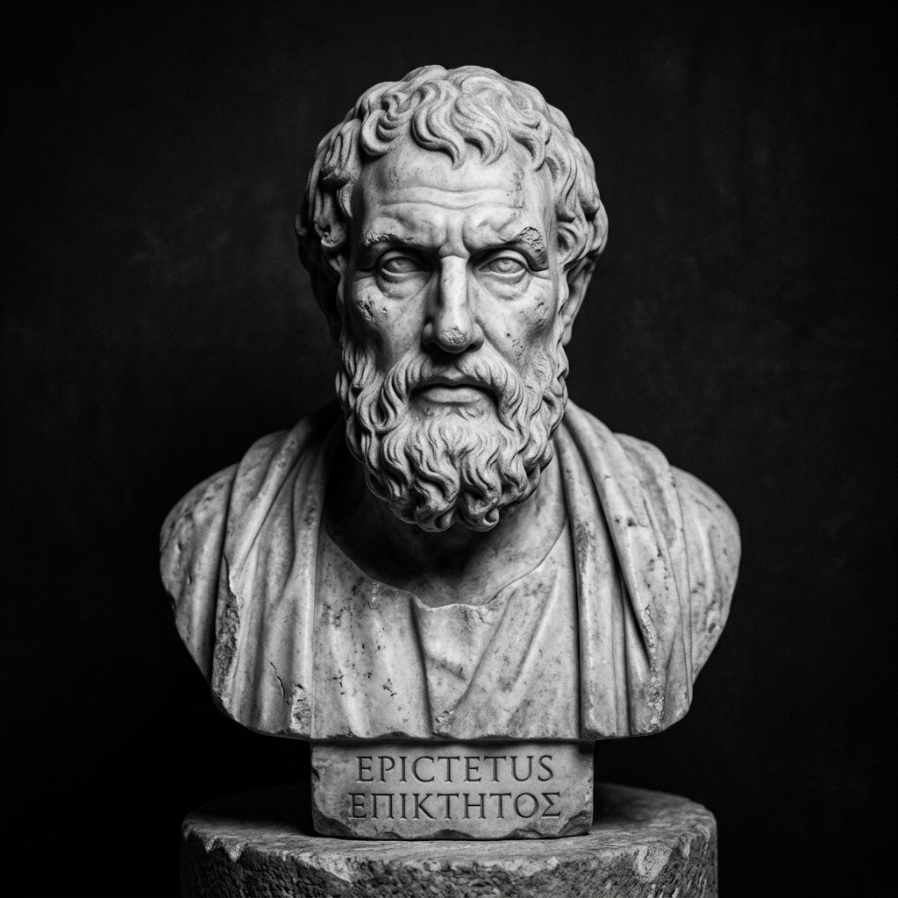

Patience & Paix intérieure
Construire une stabilité intérieure capable de résister aux difficultés, aux frustrations et à l’incertitude.
💡 Les trois principes fondamentaux du parcours
Distinguer ce qui dépend de nous de ce qui n’en dépend pas
La paix de l'âme commence au moment où nous cessons d'épuiser notre énergie contre l'incontrôlable.
Créer un espace entre l’événement et la réaction
Entre le stimulus et notre réponse réside notre liberté ultime : le pouvoir de choisir notre état d'esprit.
Transformer l’attente en préparation intérieure
La patience n'est pas une résignation passive, mais une force tranquille qui mûrit dans le silence.
🎯 Pratiques & Exercices d’Application
Exercices concrets pour ancrer cette sagesse dans votre quotidien :
Le cercle du contrôle quotidien
Tracez deux cercles concentriques : placez au centre ce sur quoi vous pouvez agir aujourd'hui, et relâchez consciemment tout ce qui est à l'extérieur.
La pause des trois respirations
Face à une contrariété ou un imprévu, prenez trois inspirations lentes avant de formuler la moindre parole ou décision.
Méditation du fleuve et de la rive
Observez vos pensées et émotions tumultueuses comme les eaux d'un fleuve, en restant fermement assis sur la rive sans vous laisser emporter.
📚 Articles et études approfondies

La citadelle intérieure : l'art stoïcien de la maîtrise de soi
Guide pratique sur la distinction stoïcienne et la préservation de la tranquillité de l'âme face aux tourments.
Lire l’article →
Le calme comme puissance : trouver la sérénité dans l'adversité
Comment transformer l'agitation mentale en force silencieuse et en clarté de décision.
Lire l’article →
Paroles immortelles sur la patience et l'endurance de l'âme
Sélection d'enseignements stoïciens et orientaux pour fortifier l'esprit au quotidien.
Lire l’article →🏛️ Sages et penseurs de référence

Épictète
Maître du Stoïcisme & LibertéAncien esclave devenu philosophe, il a enseigné la liberté absolue de l'esprit.
Sénèque
Philosophe de la Sérénité & du TempsThéoricien de la tranquillité de l'âme et de la brièveté salutaire de la vie.
Marc Aurèle
Empereur-Philosophe StoïcienAuteur des Pensées pour moi-même, modèle d'intégrité, de devoir et de calme royal.